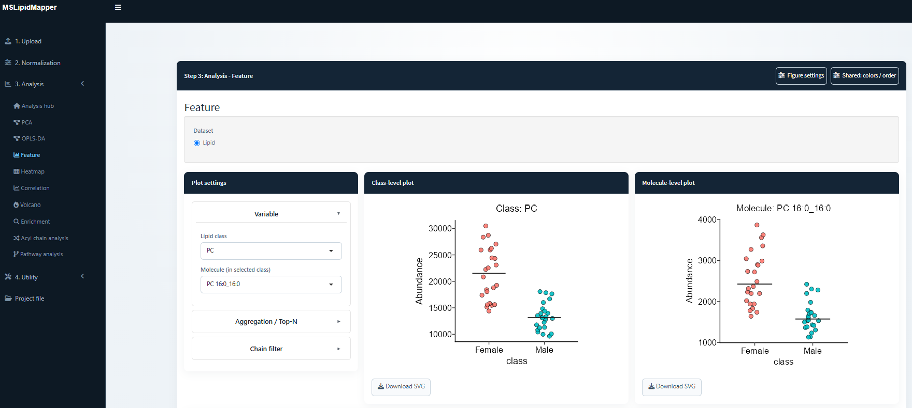
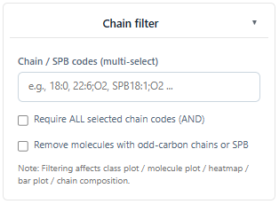

Feature
Inspect lipid class and molecule abundances and apply chain filters.
Feature plots
Open 3. Analysis → Feature to inspect abundances for a lipid class and an individual molecule across sample groups.
Select a class and molecule
- Select Lipid under Dataset.
- In Plot settings, expand Variable.
- Set Lipid class to PC for this example.
- Under Molecule (in selected class), select PC 16:0_16:0.
- Review the Class-level plot and Molecule-level plot side by side.


Read the plots
The class-level plot summarizes the selected lipid class using the current aggregation settings. The molecule-level plot displays the selected individual lipid. In the illustrated dot plots, each point represents a sample and the black horizontal line marks the group median. The groups are Female and Male, as set during metadata import.
Inspect the spread within each group alongside differences between groups. In this screenshot, Female samples have higher displayed abundances for both the PC class summary and PC 16:0_16:0.
Adjust the view and export
Expand Aggregation / Top-N to review the class summary options, or Chain filter to inspect the available chain selection controls. Use Figure settings to adjust plot appearance and Shared: colors / order to configure group colors and ordering.
Filter by chain or sphingoid base
Expand Chain filter. Under Chain / SPB codes (multi-select), select one or more available chain or sphingoid base (SPB) codes, such as 18:0, 22:6;O2, or SPB18:1;O2.
- With Require ALL selected chain codes (AND) unchecked, retain molecules matching any selected code.
- Check Require ALL selected chain codes (AND) to retain molecules containing every selected code.
- Check Remove molecules with odd-carbon chains or SPB to exclude molecules containing an odd-carbon chain or sphingoid base.
The filter affects the class plot, molecule plot, heatmap, bar plot, and chain composition in this Feature view. Clear the selected codes and uncheck odd-carbon removal to restore the unfiltered view.


Click Download SVG below either plot to save that figure.
See Figure settings for shared group colors and display order.